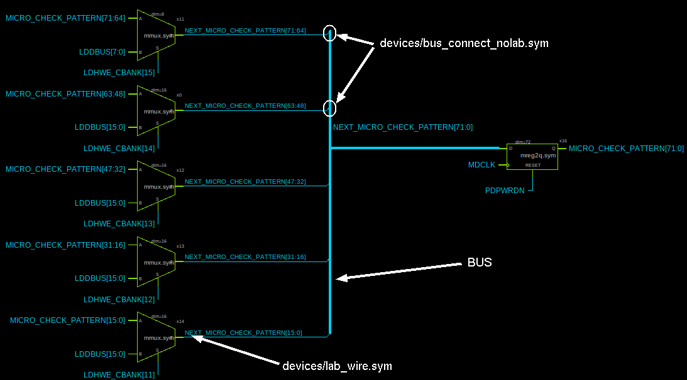
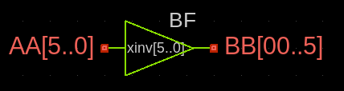
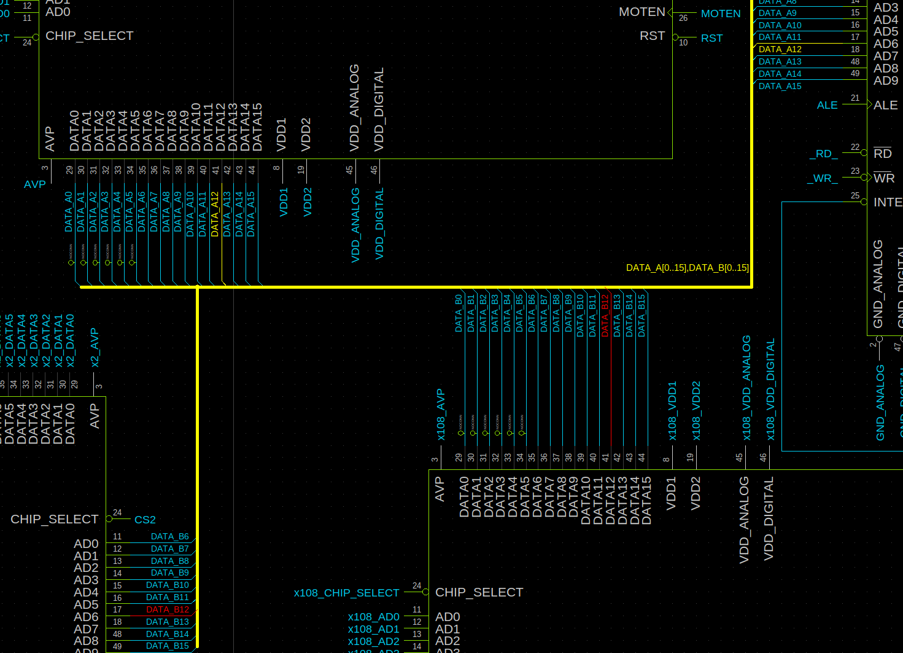
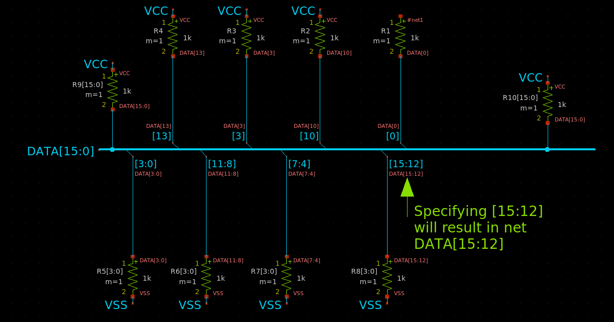
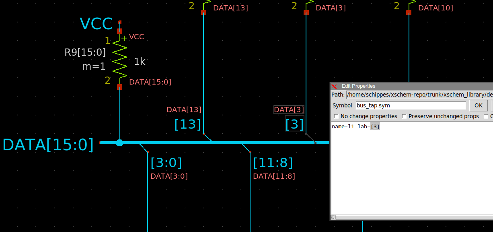
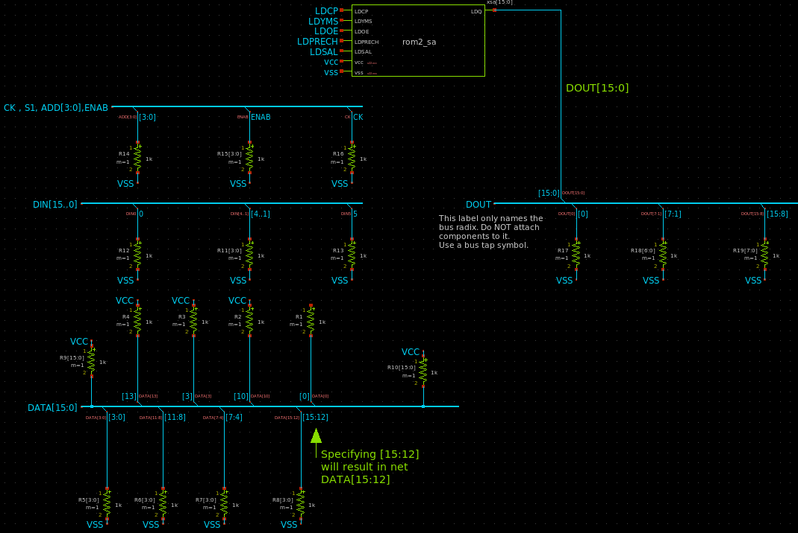

TUTORIAL: Use Bus/Vector notation for signal bundles / arrays of instances
XSCHEM has the ability to use a compact notation to represent signal bundles. There is no specific 'bus' entity, in XSCHEM a bus is simply a wire with a label representing a bundle of bits, the syntax is explained below. Normally a net label assigns a name to a wire, for example 'ENABLE', 'RESET', 'CLK' and so on, however more complex formats are available to describe multiple bits.
- AAA,BBB,CCC: described a bundle of 3 signals, AAA, BBB, CCC.
- AAA[3:0]: describes the set AAA[3],AAA[2],AAA[1],AAA[0]. The form AAA[3:0] and AAA[3],AAA[2],AAA[1],AAA[0] are exactly equivalent.
- AAA[1:0],BBB[5:4]: describes the bundle: AAA[1],AAA[0],BBB[5],BBB[4].
- AAA[6:0:2]: describes the bundle AAA[6],AAA[4],AAA[2],AAA[0].
- AAA[0:1:4:3]: describes the bundle AAA[0],AAA[1],AAA[4],AAA[5],AAA[8],AAA[9].
The meaning of the 4 parameters are: start:end:offset:repetitions. - 2*AAA[1:0]: describes the bundle AAA[1],AAA[0],AAA[1],AAA[0].
- AAA[1:0]*2: describes the bundle AAA[1],AAA[1],AAA[0],AAA[0].
- 2*(AAA[1:0],BBB): describes the bundle AAA[1],AAA[0],BBB,AAA[1],AAA[0],BBB.
- (AAA[1:0],BBB)*2: describes the bundle AAA[1],AAA[1],AAA[0],AAA[0],BBB,BBB.
All the above notations are perfectly valid label net name attributes.
In a very similar way multiple instances can be placed in a schematic setting the 'name' attribute to a vector notation.
For example in picture below x22[15:0] represents 16 inverters with names x22[15],x22[14],...,x22[0].
Recently a new notation has been added for buses that expands without putting brackets:
- AAA[3..0]: describes the set AAA3,AAA2,AAA1,AAA0. The form AAA[3..0] and AAA3,AAA2,AAA1,AAA0 are exactly equivalent.
- AAA[1..0],BBB[5..4]: describes the bundle: AAA1,AAA0,BBB5,BBB4.
- AAA[6..0..2]: describes the bundle AAA6,AAA4,AAA2,AAA0.
- 2*AAA[1..0]: describes the bundle AAA1,AAA0,AAA1,AAA0.
- AAA[1..0]*2: describes the bundle AAA1,AAA1,AAA0,AAA0.
- 2*(AAA[1..0],BBB): describes the bundle AAA1,AAA0,BBB,AAA1,AAA0,BBB.
- (AAA[1..0],BBB)*2: describes the bundle AAA1,AAA1,AAA0,AAA0,BBB,BBB.
In following picture there is a main 72 bit bus (the vertical thick wire) and bus ripper symbols (devices/bus_connect_nolab.sym) are used to take slices of bits from the main bus. Wire labels are used to define bus slices. To display thick wires for busses, select all wire segments, then press 'q' and add attribute bus=true.
following picture shows an istantiation of 6 inverters:
The generated spice netlist is the following:
... xinv5 BB0 AA5 bf xinv4 BB1 AA4 bf xinv3 BB2 AA3 bf xinv2 BB3 AA2 bf xinv1 BB4 AA1 bf xinv0 BB5 AA0 bf ...
Example of a more complex bus routing. main bus is a bundle of 2 buses: DATA_A[0..15] and DATA_B[0..15]
BUS TAPS
A new symbol, devices/bus_tap.sym has been creted to make bus connections more flexible. This is a 2 pin symbol, one pin must be connected to the bus wire, the other pin only defines the bus slice, indicating only the range of bits and not the complete bus name:
As you see in the picture a lab attribute is given that specifies only a bit range, like [13] or [7:0]. The net attached to the 'bus slice' end of the bus_tap.sym will get the base name of the bus (DATA in the example) and the index, that is DATA[13] In the example below the menu Options->Show net names on symbol pins / floaters has been enbled to see (the pink texts) the resulting net names.
A complete example examples/test_bus_tap.sch shows various possible bus_tap.sym use cases.
